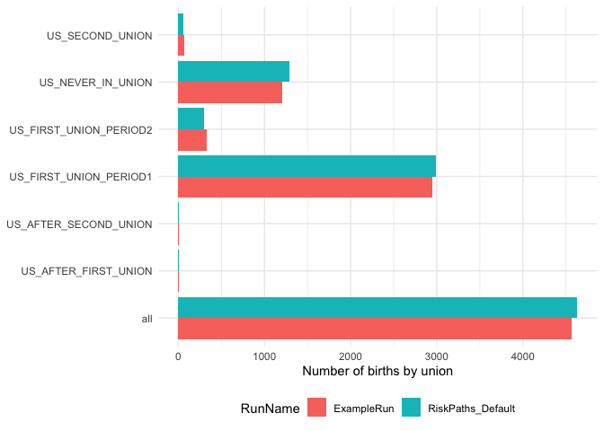

The goal of openmpp is to provide a programmatic interface to the OpenM++ API directly from R to simplify creating scenarios, running models, and gathering results for further processing.
Installation (R Package)
You can install the development version of openmpp from GitHub with:
# install.packages("remotes")
remotes::install_github("mattwarkentin/openmpp")Installation (OpenM++)
If you do not have access to an existing OpenM++ server, you can download and install OpenM++ locally and run a local server on your workstation. The openmpp package can then connect to this local server instance.
Download
For most users, the best way to install OpenM++ locally is to download the pre-compiled binaries. To install OpenM++, download and unzip the “Source code and binaries” appropriate for your operating system. The latest release of OpenM++ can be found here: https://github.com/openmpp/main/releases/latest. Pre-compiled binaries are available for Mac (Intel and Arm), Windows, and several common Linux distributions (Debian, Ubuntu, RedHat).
NOTE: Windows may allow you to view the contents of the zip directory without extracting, however, the files must be extracted for the installation to function properly.
Running OpenM++ on Windows
Enter the OpenM++ directory using the File Explorer. Right-click anywhere inside the folder and select “Open in Terminal”.
In the Windows Terminal, enter the following command:
This will start the process responsible for running the OpenM++ web service (OMS). Note that the local host address (e.g., http://localhost:4040) will be printed in the console and is the address used by the openmpp R package to communicate with the API. This local host address will be set as the OPENMPP_LOCAL_URL. See the Usage section for more details.
Running OpenM++ on MacOS
Open a new MacOS Terminal window (either by using Spotlight Search or by navigating to “Applications” and then “Utilities” in Finder).
After unzipping the downloaded directory in Finder, drag the folder into the terminal and press Enter. This will change your active directory to the OpenM++ folder.
Enter the following command into the terminal:
Similar to the Windows installation, the web service (OMS) will initiate and the local host address will be shared with the R package for API communication.
Usage
The openmpp package contains many functions that provide access to nearly every OpenM++ API endpoint. However, users of this package will typically only use a smaller set of functions for most common tasks.
User Authentication
Each user is required to set their local or remote host address (i.e., URL) for the OpenM++ API in their global or project-specific .Renviron file in order for the openmpp package to authenticate and communicate with the API on behalf of the user.
If you are working in an IDE (e.g., Positron, RStudio), you may consider using the following function usethis::edit_r_environ() to open your .Renviron file for editing. Note that you will need to restart your R session after editing the file for the effect to take place.
For an API running locally, set the following environment variable in your .Renviron file:
Where XXXX is the four digits corresponding to your specific local host address (typically 4040 is used). The local host address is printed to the console when starting the OpenM++ web service in the terminal.
This package also provides the ability to remotely connect to OpenM++ using JWT tokens. For an API running remotely, set the following environment variables in your .Renviron file:
If you aren’t sure of your remote URL or your username/password, you may contact your OpenM++ administrator to retrieve this information. Note that the URL, user name, and password should be kept confidential and not committed into version control (e.g., git).
Once the environment variables are set, users may register a local or remote API connection in their R scripts.
Or,
see ?use_OpenMpp_local or ?use_OpenMpp_remote for more information.
Main Functions
-
Functions for accessing tables of models, worksets, or model runs
-
Functions for creating new worksets or scenarios
-
Functions for loading models, worksets, or model runs
-
Functions for deleting worksets or model runs
Models, Scenarios, Runs, and RunSets
There are 4 main classes you will work with when using the openmpp package: OpenMppModel, OpenMppWorkset, OpenMppModelRun, and OpenMppModelRunSet. Each of these are R6 classes. R6 is an encapsulated object-oriented programming system for R. Use the load_*() set of functions to load a model, workset/scenario, model run, or set of model runs into memory.
Instances of each of these 4 classes have methods and fields associated with them. You can access public methods and fields using the standard $ subset operator (e.g., obj$action() or obj$field)
Developing New Models
Developing new microsimulation or agent-based models in OpenM++ is beyond the scope of this package. In-depth information on model development can be found here: https://github.com/openmpp/openmpp.github.io/wiki/Model-Development-Topics.
Example
Next, we will work through a very simple example of creating a new scenario, extracting parameters to change, changing parameters, running the model, and extracting results. This example will use the RiskPaths model that comes with the OpenM++ software. RiskPaths is a simple, competing risk, case-based continuous time miscrosimulation model (More Information).
To run this example, you must have installed OpenM++, initiated the OpenM++ web service (OMS) in the shell, and configured the R package using the instructions above.
Let’s see what models are available:
get_models()
#> # A tibble: 8 × 7
#> ModelId Name Digest Type Version CreateDateTime DefaultLangCode
#> <int> <chr> <chr> <int> <chr> <chr> <chr>
#> 1 101 IDMM bd573… 1 2.0.0.0 2024-12-26 07… EN
#> 2 101 NewCaseBased be317… 0 1.0.0.0 2024-12-26 07… EN
#> 3 101 NewCaseBased_bili… 2a78a… 0 1.0.0.0 2024-12-26 07… EN
#> 4 101 NewTimeBased 49cec… 1 1.0.1.0 2024-12-26 07… EN
#> 5 101 OzProjGenX 1da1c… 0 0.22.0… 2024-12-26 07… EN
#> 6 101 OzProjX 2e697… 0 0.22.0… 2024-12-26 07… EN
#> 7 101 RiskPaths d976a… 0 3.0.0.0 2024-12-26 07… EN
#> 8 1 modelOne _2012… 0 1.0 2012-08-17 16… ENWe can now see what worksets and model runs exist for a given model.
get_worksets('RiskPaths')
#> # A tibble: 1 × 10
#> ModelName ModelDigest ModelVersion ModelCreateDateTime Name BaseRunDigest
#> <chr> <chr> <chr> <chr> <chr> <chr>
#> 1 RiskPaths d976aa2fb999f0… 3.0.0.0 2024-12-26 07:24:5… Defa… ""
#> # ℹ 4 more variables: IsReadonly <lgl>, UpdateDateTime <chr>,
#> # IsCleanBaseRun <lgl>, Txt <list>
get_runs('RiskPaths')
#> # A tibble: 1 × 15
#> ModelName ModelDigest ModelVersion ModelCreateDateTime Name SubCount
#> <chr> <chr> <chr> <chr> <chr> <int>
#> 1 RiskPaths d976aa2fb999f097468… 3.0.0.0 2024-12-26 07:24:5… Risk… 1
#> # ℹ 9 more variables: SubStarted <int>, SubCompleted <int>,
#> # CreateDateTime <chr>, Status <chr>, UpdateDateTime <chr>, RunId <int>,
#> # RunDigest <chr>, ValueDigest <chr>, RunStamp <chr>Now we can load the RiskPaths model to inspect.
rp <- load_model('RiskPaths')
rp
#> ── OpenM++ Model ───────────────────────────────────────────────────────────────
#> → ModelName: RiskPaths
#> → ModelVersion: 3.0.0.0
#> → ModelDigest: d976aa2fb999f097468bb2ea098c4dafWe will now load the Default set of input parameters for the RiskPaths model.
rp_default <- load_scenario('RiskPaths', 'Default')
rp_default
#> ── OpenM++ Workset (ReadOnly) ──────────────────────────────────────────────────
#> → ModelName: RiskPaths
#> → ModelVersion: 3.0.0.0
#> → ModelDigest: d976aa2fb999f097468bb2ea098c4daf
#> → WorksetName: Default
#> → BaseRunDigest:Finally, we will load the base run for the RiskPaths model.
baserun_digest <- rp$ModelRuns$RunDigest[[1]]
rp_baserun <- load_run('RiskPaths', baserun_digest)
rp_baserun
#> ── OpenM++ ModelRun ────────────────────────────────────────────────────────────
#> → ModelName: RiskPaths
#> → ModelVersion: 3.0.0.0
#> → ModelDigest: d976aa2fb999f097468bb2ea098c4daf
#> → RunName: RiskPaths_Default
#> → RunDigest: c02d49bfda2e2ff05262ac0f0e30d830We will create a new scenario based on the parameters from the RiskPaths_Default model run.
create_scenario('RiskPaths', 'MyNewScenario', baserun_digest)We will load the new scenario, copy over the AgeBaselinePreg1 parameter from the base run.
my_scenario <- load_scenario('RiskPaths', 'MyNewScenario')Let’s reduce the fertility rate by 10% across all age groups…
my_scenario$copy_params('AgeBaselinePreg1')
library(dplyr)
current_rates <- my_scenario$Parameters$AgeBaselinePreg1
reduced_rates <-
current_rates |>
mutate(across(-sub_id, \(x) x * 0.9))
my_scenario$Parameters$AgeBaselinePreg1 <- reduced_ratesWe will now run the model and give it the name 'ExampleRun'. We use the wait = TRUE flag to make sure we want for the model run to finish before returning to our R session. We use progress = FALSE to avoid printing progress bars in this document. Note that model runs may take a long time when the number of simulation cases is large.
my_scenario$ReadOnly <- TRUE
my_scenario$run('ExampleRun', wait = TRUE, progress = FALSE)Note that we can use the opts argument and the opts_run() function to configure our run. By default, models are run with 5,000 simulation cases and 12 SubValues. This allows for quick model runs and faster iteration, but users will want to increase the number of simulation cases when performing a full model run.
Now that our model run is complete, let’s load it into memory.
example_run <- load_run('RiskPaths', 'ExampleRun')
example_run
#> ── OpenM++ ModelRun ────────────────────────────────────────────────────────────
#> → ModelName: RiskPaths
#> → ModelVersion: 3.0.0.0
#> → ModelDigest: d976aa2fb999f097468bb2ea098c4daf
#> → RunName: ExampleRun
#> → RunDigest: 75414f902f6c7d20018ae857833b33faWe can now extract an output table from the Tables field in the model run object (example_run$Tables).
example_run$Tables$T06_BirthsByUnion
#> # A tibble: 7 × 3
#> expr_name Dim0 expr_value
#> <chr> <chr> <dbl>
#> 1 Expr0 US_NEVER_IN_UNION 1205.
#> 2 Expr0 US_FIRST_UNION_PERIOD1 2944.
#> 3 Expr0 US_FIRST_UNION_PERIOD2 333.
#> 4 Expr0 US_AFTER_FIRST_UNION 10.0
#> 5 Expr0 US_SECOND_UNION 72.0
#> 6 Expr0 US_AFTER_SECOND_UNION 1.00
#> 7 Expr0 all 4565.Great, we have created a new scenario, modified some parameters, ran the model, and extracted output tables. In this last step, we will load multiple model runs into memory to compare them.
rp_runs <- load_runs('RiskPaths', rp$ModelRuns$RunDigest)
rp_runs
#> ── OpenM++ ModelRunSet ─────────────────────────────────────────────────────────
#> → ModelName: RiskPaths
#> → ModelVersion: 3.0.0.0
#> → ModelDigest: d976aa2fb999f097468bb2ea098c4daf
#> → RunNames: [RiskPaths_Default, ExampleRun]
#> → RunDigests: [c02d49bfda2e2ff05262ac0f0e30d830, 75414f902f6c7d20018ae857833b33fa]We will extract a new table from both models. Note that an extra column, RunName is added to indicate which model run the output table data corresponds to.
births <- rp_runs$Tables$T06_BirthsByUnion
births
#> # A tibble: 14 × 4
#> RunName expr_name Dim0 expr_value
#> <chr> <chr> <chr> <dbl>
#> 1 RiskPaths_Default Expr0 US_NEVER_IN_UNION 1285
#> 2 RiskPaths_Default Expr0 US_FIRST_UNION_PERIOD1 2986
#> 3 RiskPaths_Default Expr0 US_FIRST_UNION_PERIOD2 293
#> 4 RiskPaths_Default Expr0 US_AFTER_FIRST_UNION 11
#> 5 RiskPaths_Default Expr0 US_SECOND_UNION 57
#> 6 RiskPaths_Default Expr0 US_AFTER_SECOND_UNION 1
#> 7 RiskPaths_Default Expr0 all 4633
#> 8 ExampleRun Expr0 US_NEVER_IN_UNION 1205.
#> 9 ExampleRun Expr0 US_FIRST_UNION_PERIOD1 2944.
#> 10 ExampleRun Expr0 US_FIRST_UNION_PERIOD2 333.
#> 11 ExampleRun Expr0 US_AFTER_FIRST_UNION 10.0
#> 12 ExampleRun Expr0 US_SECOND_UNION 72.0
#> 13 ExampleRun Expr0 US_AFTER_SECOND_UNION 1.00
#> 14 ExampleRun Expr0 all 4565.We can even plot this using ggplot2! Note that the number of simulation cases for ExampleRun is low so the results are not to be trusted! This is only for demonstration purposes.
library(ggplot2)
births |>
ggplot(aes(Dim0, expr_value, fill = RunName)) +
geom_col(position = position_dodge()) +
labs(x = NULL, y = 'Number of births by union') +
coord_flip() +
theme_minimal() +
theme(legend.position = 'bottom')
When we are sure we no longer need a scenario or model run, we can use delete_scenario() or delete_run() to clean things up!
Contributor Guidelines
Contributions to this package are welcome. The preferred method of contribution is through a GitHub pull request. Before contributing, please file an issue to discuss the idea with the project team. More details on contributing can be found in the CONTRIBUTING document.
Code of Conduct
Please note that the openmpp project is released with a Contributor Code of Conduct. By contributing to this project, you agree to abide by its terms.